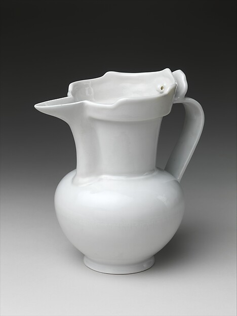
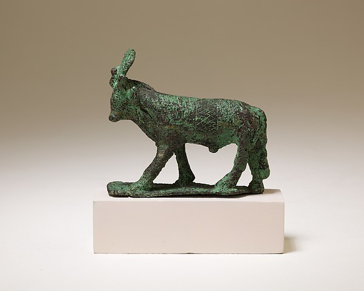
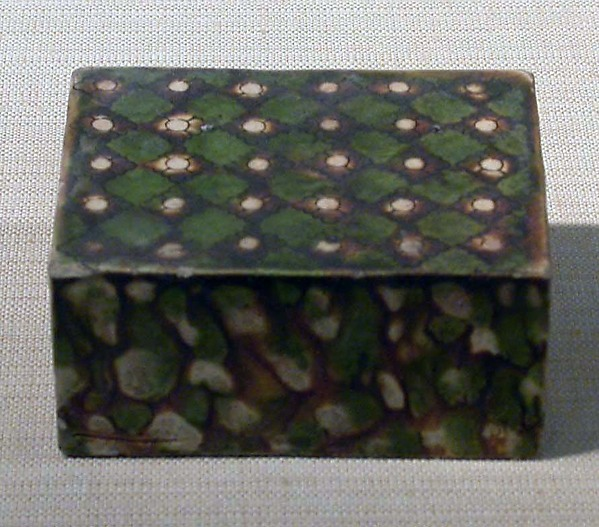

器型纵览
横向滑动浏览唐代花器的四种核心器型

军持（净瓶）
源自印度佛教法器，唐代随佛教东传普及。长颈、撇口、带流，用于佛前供水与插花。越窑和邢窑均有烧造。

唐代梅瓶雏形
小口、短颈、丰肩、敛腹，虽至宋代才称"梅瓶"，唐代已有近似器型用于贮酒与插花。三彩釉色斑斓，金银器錾刻精工。

长颈瓶
细长颈、圆鼓腹，唐代金银器中的经典器型。长颈利于单枝花材的固定与展示，是士人书斋和佛堂的常见花器。

凤首瓶
受波斯金银器影响，瓶口塑为凤首造型，颈部细长，腹部饱满。唐三彩凤首瓶色彩绚丽，是唐代中西合璧花器的典范。